Blender Beginner for Beginner Tutorial: Roman Stand
12th September 2009 - Blender 2.47
For my third model I decided to make a Roman Stand. The model is based on a stand I saw at the Bardo Museum in Tunis, shown alongside my resulting model below.
-
Create a cube mesh (SPACE Key, then Add~~Mesh~~\>Cube) with the origin at the
top right corner, then deform it to the dimensions shown in the image
below. This will form part of one leg of the base.
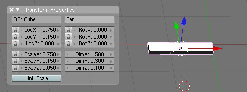 -
The angle formed by the prism at the origin should be 60 degrees (so it
will be correct once mirrored and spun). Using tan 60o = 0.3
/ x, we can see that the bottom right corner has to be moved in 0.173205
(to 6 dp). Go into Edit Mode (TAB) and select the bottom right vertex
and then with the transform box (N key) move it to the desired position.
This mesh will be mirrored and spun in later steps to create the
complete bases. The more accurate this stage, the easier it will be to
fix any slight join errors when spun.
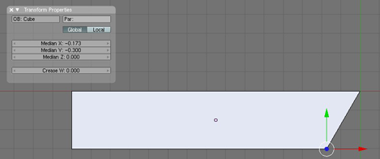 -
Next the curve in the base legs needs to be modelled. Leave Edit Mode
(TAB). Create a cylinder mesh and place it so one edge is on the bottom
right corner of the base. Scale the cyclinder until there is a pleasing
curve in the base (with the edge still on the corner). Ensure the
cyclinder passes completely through the base.
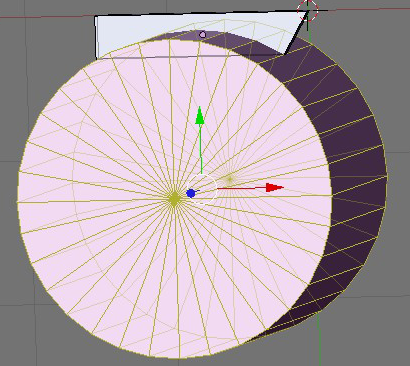 -
Ensure nothing is selected (use the A key until nothing is pink). In
Object Mode select the base and then select the cyclinder as well with
the SHIFT key. Then use W key and choose the Difference option. This
will create a new mesh (which is the first selected mesh with the second
selected mesh subtracted - in this case the base with a curve cut into
it from the cylinder). Move the original objects away from the new
object and delete them. The new base should look like a curve has been
cut out of one side. Select the base and go into Face Edit Mode (TAB,
then CTRL-TAB and select the Faces option) select the faces that make up
the curved part of the base, then set them smooth (using the “Set
Smooth” option on the Editing (F9) buttons panel).
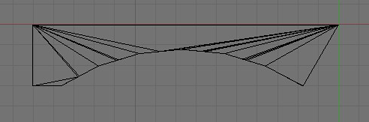 -
Still in Face Edit Mode, select the face parallel to the X axis. The
cursor needs to be moved to the centre of this face, so use SHIFT-S
followed by “Cursor-\>Selection”. Then delete this face with the X key.
In the Editing panel (F9), select “Center Cursor” from the Mesh subpanel
which will move the object’s center to where the 3D cursor is located.
Finally, set a mirror modifier in the Modifiers subpanel in the Y axis
only and apply (with the Apply button). This will be one leg of the
base.
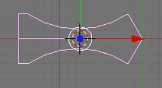 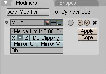 -
Go back to Object Mode and ensure nothing it selected. Create a a
cyclinder (36 vertices, radius 0.075, depth 1.2, uncapped) and position
it so the center is over the origin (the point of the base) and the
bottom edge rests on top of the base (0.05 on the Y axis for me). Rotate
it so that two points lie on the edge of the base and delete the
vertices not over the base. Smooth the cyclinder’s faces.
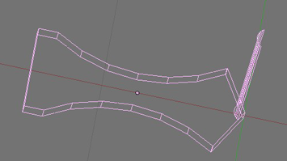 -
Go to side view (NUMPAD1), add a cube mesh onto the base. Then add a
cyclinder (capped) such that it is side-on to the current view (ie. you
can just see the circle formed by one of the ends). Both the cube and
cylinder are shown below with the cylinder’s transform properties.
Smooth the cyclinder.
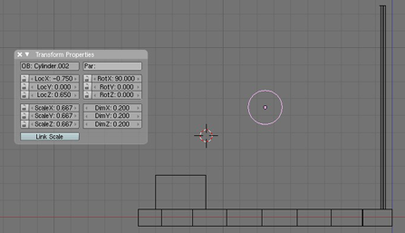 -
Now the cube and cylinder created in the previous step have to be joined
by a pleasantly curved mesh. Add another uncapped cyclinder with its
base on the cube as shown on the left below. Smooth the cylinder. Edit
the cylinder in Edge Select mode and select the sides of the cylinder,
but not the top or bottom. Press W and select “Subdivide Multi” with the
option “Number of Cuts: 15”. Now there should be intermediate loops up
the side of the cyclinder. Go into Vertex Select mode and select the top
ring. Turn on Connected Proportional Editing (ALT-O) with smooth
falloff. Grab the top ring and move it such that it is just inside the
other cyclinder. Use the PAGEUP/PAGEDOWN keys to adjust the size of the
connected zone until you have a pleasing curve to the joining cyclinder.
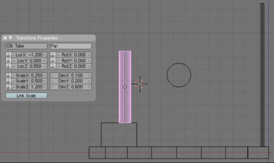 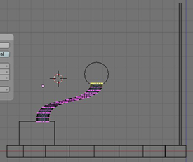 -
Add another cube and transform as shown on the left. Select the side
edges of the prism and use W with “Subdivide Multi” set to 40 cuts.
Using Connected Proportional Editing with sharp falloff grab the bottom
face and move it above the cyclinder but such that the bottom face of
the transformed cube touches the top of the cylinder along the way. Do
the same again with a smaller falloff to get the extra bit of curve at
the tip. Move the cursor to the selection (SHIFT-S). Then with scale the
end face to 0 in all axes to make a point. You may want to turn off
Connected Proportional Editing for this stage, or at least have it set
to a very small falloff.
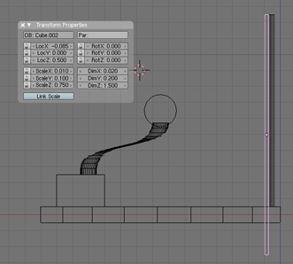 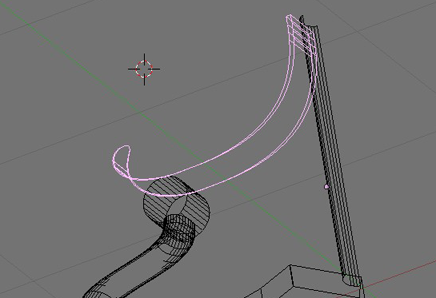 -
Back in Object Mode select all meshes (A) and then join them together
with CTRL-J. Use SHIFT-C to move the cursor to the origin. Switch to top
view (NUMPAD7) and go into Edit Mode. Select everything and then press
the “Spin Dup” button on the “Mesh Tools” subpanel on the Editing panel
(F9) with Degr set to 240 degrees and Steps set to 2. This forms the
complete base for the stand. At this stage you may like to remove
duplicate vertices using the “Rem Double” button on the “Mesh Tools”
subpanel. You may also need to slightly rework the joins between the
legs, depending on how accurate the 60 degree angle was in the second
step.
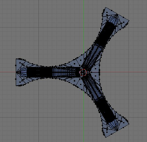 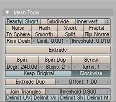 -
Cap the base by adding a cube mesh on top of it and then reducing the
height. Then add a cyclinder with the properties shown in Transform
panel shown below on the left and set it to be smooth. In Edit Mode
select the top circle (use ALT-RMB to select the edge loop) of the
cylinder, move the cursor to centre of this circle (use SHIFT-S and
select “Cursor-\>Selection”) and then scale it 0.6 in the X & Y axes.
Select just the side edges and use W with “Subdivide Multi” set to 12
cuts. Select the 4th ring down from the top then with
Connected Proportional Editing with a small sphere falloff, scale it 1.3
in the X & Y axes to create a little ridge.
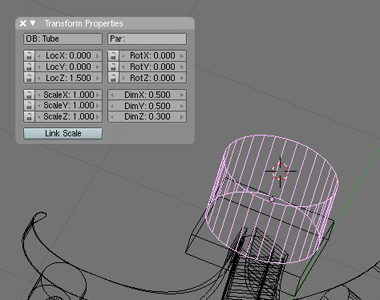 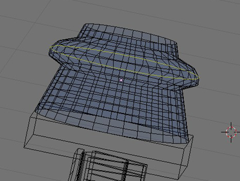 -
Add a long cyclinder on top of the base from the previous step. Smooth
the cylinder.
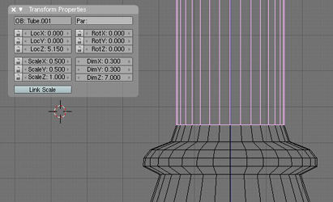 -
In Object Mode select the ridged cylinder and duplicate it (CTRL-D).
Rotate the new ridged cylinder through 180 degrees around the X axis so
it appears upside down compared to the original. Move the copy on top of
the long cylinder created in the previous step. Put a duplicate of the
base rectangle on top of that.

-
Create a cube and place it on top of the stand. Transform it to look
like the image below. Select the sides of the mesh and use W with
“Subdivide Multi” set to 24 cuts.
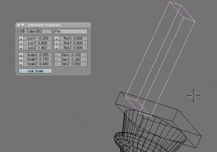 -
Select the top face of the rectangle and using Connected Proportional
Editing with linear falloff move the top face away from the stand, so
that it leans out from the main body of the stand. Once you find a good
position, move the cursor to the centre of the top face (use SHIFT-S and
select “Cursor-\>Selection”). Use Connected Proportional Editing again
with smooth falloff and rotate the top face away from the stand until it
forms a nice curve.
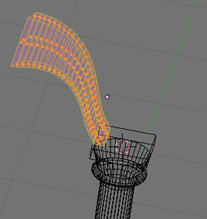 -
Move the cursor to the origin with SHIFT-C, go to top view (NUMPAD7).
Select all points in the curved mesh created in the previous step and
use “Spin Dup” with 3 steps through 270 degrees so that there are four
such curved meshes, one for each side of the base.
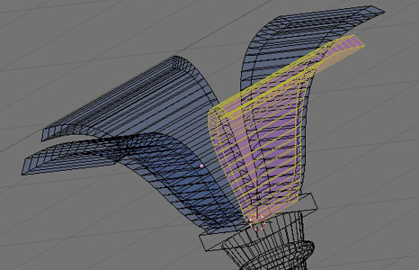 -
Create a flatish cylinder and place it such that it just rests on top of
the curved meshes.
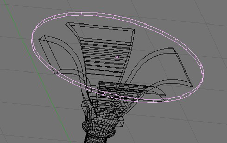 - Select all objects and join them with CTRL-J. I applied the Antique Brass material from the Open Material Repository. I also selected the top half of the stand and scaled it down in the X & Y axes by 0.6. </ol> </p>
And it is complete! You can download the blend file here.

Roman
Stand Blender Model by
Charles
Cordingley is licensed under a
Creative
Commons Attribution 2.0 UK: England & Wales License.